2025年10月21日にアンカー・ジャパンが発表した自主回収の対象は、モバイルバッテリーだけではない。BluetoothスピーカーのSoundcore 3（型番：A3117）も同じ回収の対象で、公表されている回収率は43.7%（2026年8月13日時点）。半数以上がまだ回収されていない。
「リコール＝バッテリー製品の話」という思い込みが、この回収を見落とさせる。消費者庁も使用中止を呼びかけた案件であり、手元にSoundcore 3があるなら、まず対象かどうかを確認してほしい。確認方法の詳細は姉妹サイト「モバイルバッテリー安全くらべマガジン」へつないでいる。

ギアコです。数字はアンカー・ジャパンの発表と公表資料に基づいています。対象かどうかの最終判定は、必ず公式の案内で行ってください。

この回収を行っているのはアンカー・ジャパンです。対象かどうかの判定と申し込みは、公式の案内が正式な情報です。
電話窓口：アンカー・ジャパン受付窓口 0120-775-171（9時〜17時）
結論と早見表
Soundcore 3（型番：A3117）も、モバイルバッテリーと同じ自主回収の対象。対象なら使用を中止し、公式の案内に沿って交換に進む。

Soundcore 3（型番：A3117）
自主回収の対象（回収率43.7%・公表値）
対象かどうか：型番がA3117で、販売期間（2022年12月16日〜2025年10月21日）内に販売された個体が対象。最終判定は公式の案内・フォームで行う
見分け方：底面のラベルで、1行目が製品名（Soundcore 3）、2行目が品番（A3117）。シリアルナンバーも底面に記載されている
窓口：アンカー・ジャパン公式の回収受付フォーム（シリアル番号で判定・24時間受付）／電話窓口 0120-775-171（9時〜17時）
写真はアンカー・ジャパン公式の回収案内ページの製品画像。対象の全体像と回収率は後ろの節で扱う。
スピーカーも回収対象という事実
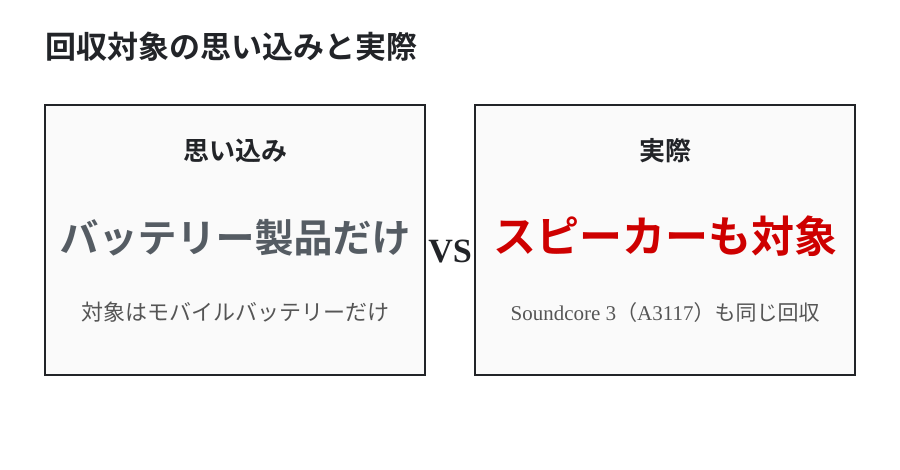
Soundcore 3は、SoundcoreシリーズのBluetoothスピーカーだ。モバイルバッテリーではない。それでも、2025年10月21日発表の自主回収では、モバイルバッテリーのPowerCore 10000（A1263）と同時に回収対象として発表された。
| 項目 | 内容（公表情報） |
|---|---|
| 製品 | Soundcore 3 |
| 型番 | A3117 |
| 販売期間 | 2022年12月16日〜2025年10月21日 |
| 発表 | 2025年10月21日（自主回収） |
| 回収率 | 43.7%（2026年8月13日時点の公表値） |
スピーカーであっても内部にバッテリーを搭載している製品は、回収の対象になりうる。「充電して使う製品は全部、確認の対象」という意識に切り替えることが、この回収の教えるところだ。
同時対象の4製品
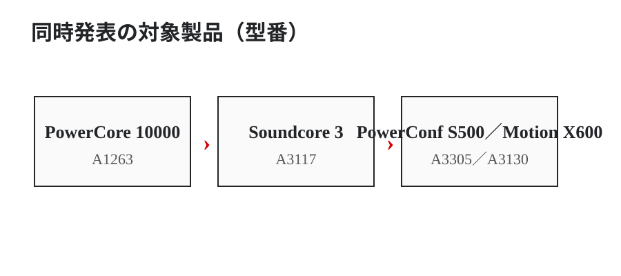
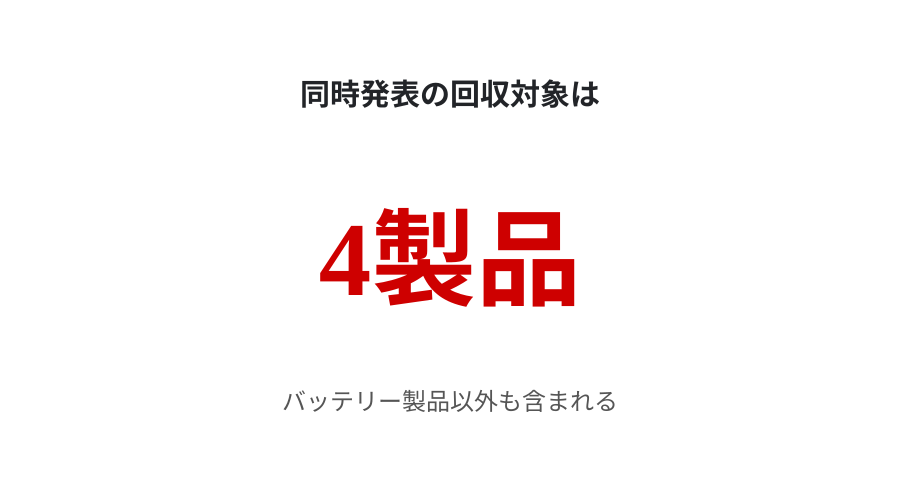
同時発表の対象は4製品。PowerCore 10000（A1263）、Soundcore 3（A3117）のほか、PowerConf S500（A3305）、Soundcore Motion X600（A3130）が含まれる。会議用スピーカーフォンや別のスピーカーまで入っており、「自分の製品は関係ない」と決めつけられる顔ぶれではない。

判定。回収の発表は「製品ジャンル」ではなく「対象製品のリスト」で読むものだ。バッテリー製品だけを確認して終わりにするのは、リストの半分しか読んでいないのと同じである。
回収率43.7%の意味
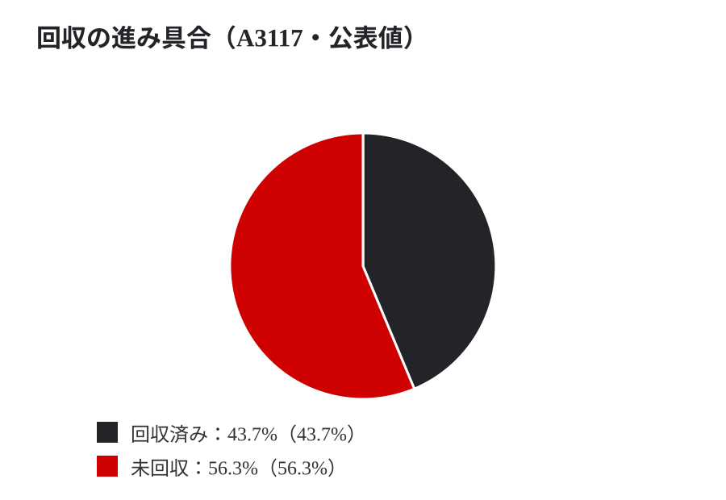
回収率43.7%は、A1263の38.9%よりは進んでいる。ただし裏を返せば56.3%、つまり対象の半数以上がまだ回収されていない。割合を100台あたりに直すと、約44台が回収され、約56台がまだ手元や市場に残っている計算になる。
| 回収率の読み方（Soundcore 3・公表値） | |
|---|---|
| 回収率（2026年8月13日時点） | 43.7% |
| 未回収の割合：100% − 43.7% | 56.3% |
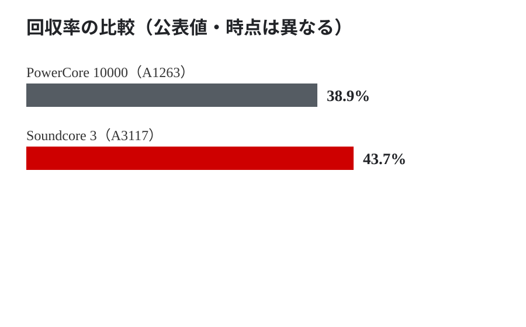
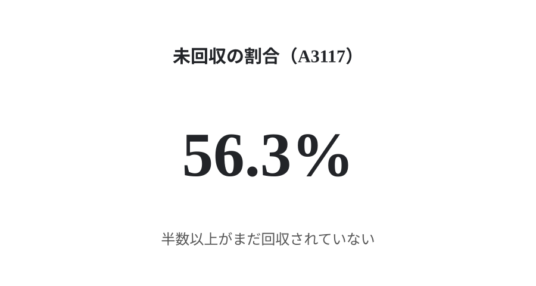
2製品の回収率の公表時点は異なるため単純な優劣の比較にはならないが、どちらも「半分前後しか回収が進んでいない」という点では同じだ。発表から時間が経っても回収が完了しないのは、対象製品が「現役で使われ続けている」か「しまい込まれて忘れられている」かのどちらかであり、後者は発表を見ていない可能性が高い。
自分の製品の確認方法
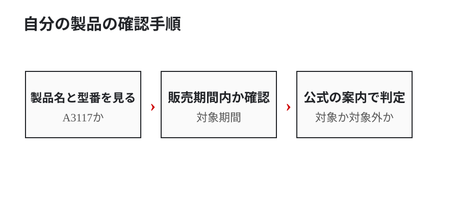
確認は、製品名と型番（A3117）であること、販売期間（2022年12月16日〜2025年10月21日）内の個体であることを押さえ、公式の案内で判定する流れだ。対象だった場合は使用を中止し、公式の案内に沿って手続きに進む。消費者庁も、車内での発火事案を受けて使用中止を呼びかけている。
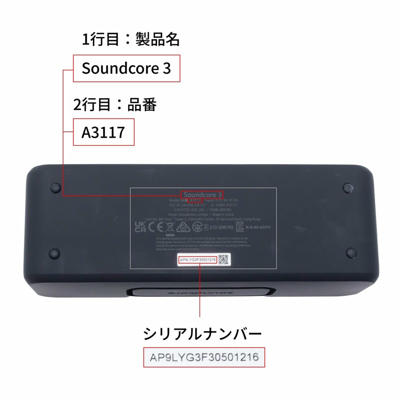
左が本体の正面、右が底面のラベル。製品名と品番（A3117）、シリアルナンバーは底面に記載されている（いずれもアンカー・ジャパン公式の案内画像）。手元の製品と見比べてほしい。
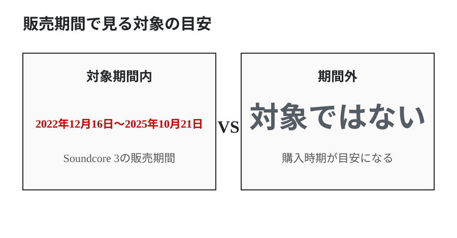
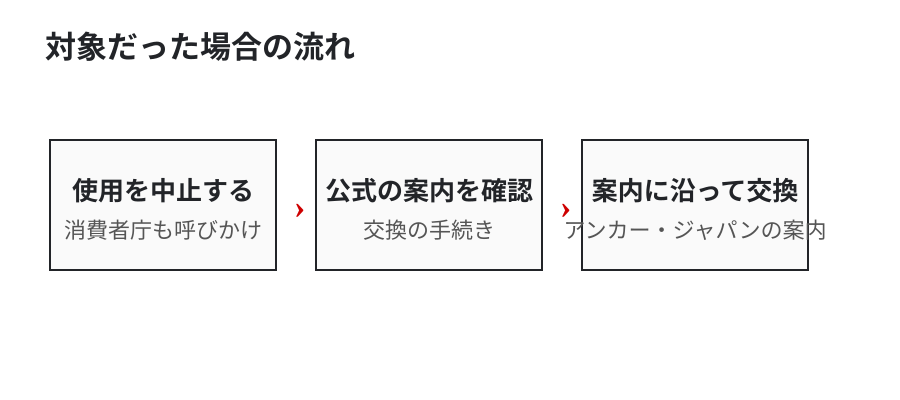
確認方法の詳しい手順と、対象製品の見分け方は、姉妹サイト「モバイルバッテリー安全くらべマガジン」にまとめている。安全な製品の選び方については安全な選び方のページもあわせて確認してほしい。
判定。「スピーカーだから対象外」という自己判断はしないこと。型番がA3117なら、公式の判定結果が全てだ。
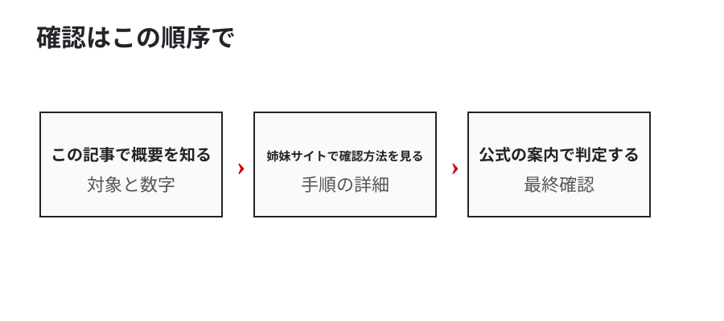


代わりにこれを選べ
手元のSoundcore 3が対象だった場合、まず使用を中止し、公式の案内どおりに手続きすること。そのうえで買い替えや代替を考えるなら、価格よりもメーカーの公表情報と安全仕様が確認できる製品を基準に選んでほしい。姉妹サイトの安全な選び方のページに、確認ポイントを整理している。
充電まわりの買い替えであれば、楽天市場で販売されているCIOの充電器・モバイルバッテリーのセット製品が候補になる（2026年11月26日時点）。
確認と手続きの入口は姉妹サイト「モバイルバッテリー安全くらべマガジン」にまとめている。

スピーカーも「充電して使う製品」です。型番がA3117かどうか、まず本体か購入履歴で確認してください。

CIO SMARTCOBY TRIO 35W 2C1A
モバイルバッテリー 20,000mAh（楽天市場）
¥4,480
2026年11月26日時点の楽天市場の表示価格
出典
- アンカー・ジャパン公式「Ankerグループ4製品に関するお詫びと自主回収のお知らせ」（2025年10月21日発表・対象にSoundcore 3（A3117）／販売期間2022年12月16日〜2025年10月21日／同時対象はPowerConf S500（A3305）・Soundcore Motion X600（A3130）・PowerCore 10000（A1263））
- アンカー・ジャパン公式「モバイルバッテリー / スピーカー回収受付フォーム」（シリアル番号による対象判定・2026年11月26日確認）
- 製品写真はアンカー・ジャパン公式「モバイルバッテリー / スピーカー回収受付フォーム」ページの製品画像（本体の正面と底面ラベル・2026年11月27日確認）
- 公表資料（回収率43.7%は2026年8月13日時点の公表値、2026年11月26日確認）。消費者庁は使用中止を呼びかけ
- 割合の換算は公表値からの当編集部の計算